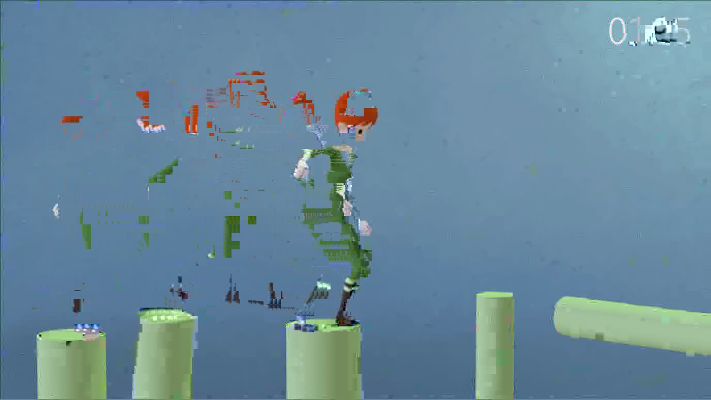

Test procedure
- Click the orange button to load a video
- Wait for it to load and start playing
- Use the previous frame buttons to seek repeatedly (uses
seekToFrame())
- Observe video quality (should be OK — these are low quality videos)
- Click button to load the other video (blue or orange)
- Wait for it to load and start playing
- Use the previous frame buttons to seek repeatedly
- Observe video quality (should be obviously broken -- see issue.jpg)
- Note: using next frame button has no issue (uses
nextFrame())
- Reload the page to reset
- You can start with either video and it will be fine
- Switching to a second video (without reloading the page) causes the issue when seeking.

Screenshot showing video artefacts from previous frames